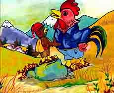

|
Un día pukupuku y el gallo discutían sobre quien tenía el derecho de anunciar con su canto la llegada del nuevo día, discutieron y discutieron, pero no han podido llegar a un acuerdo y acordaron llevar sus quejas a conocimiento de las autoridades del pueblo, en el camino el gallo hizo amistad con un ratón que le pidió un poco de cancha para sus hijos que sufrían de hambre, a cambio tenía que acompañar y ayudar al gallo como testigo, cuando llegaron al pueblo se fueron al despacho del juez. Y dijo pukupuku: señor juez yo tengo el derecho de anunciar con mi canto la llegada del nuevo día, mis antepasados hicieron lo mismo, ahora este gallo es un extranjero recién llegado trata de usurpar mis derechos, el gallo también expreso su queja que él tenía derecho para hacer despertar a la población. Entonces el juez digo: bien, presenten su demanda por escrito. El pukupuku expreso en su demanda que él ha sido designado por las deidades como los cerros, la madre tierra, la Luna y el sol y otros seres de la naturaleza, por lo tanto, tiene derecho de cantar todas las mañanas a la nueva vida y como testigo la “Leqechito” (cintinela). El Gallo manifestó diciendo; que yo he adquirido el derecho de cantar al amanecer porque mis dueños han conquistado estas tierras y como testigo era el “achacu” (ratón). El juez había citado a un comparendo a ambos demandantes; en la mañana el juez ha tenido que escuchar los cánticos de pukupuku y del gallo, para cumplir con la propuesta del juez el pukupuku había cantado cada media hora y el gallo cada hora, pero como el gallo tenía como su testigo al ratón, el ratón había extraído la documentación de la demanda de pukupuku y a la vez al gallo despertaba el ratón según el reloj del señor juez. En la mañana el juez llamó a los demandantes y les dijo; Pukupuku no serás el que cante y que haga despertar a la población, entonces el leqechito quería defender y el juez lo agarro a golpes y por eso en la actualidad tiene esta ave la cabeza plana; y al gallo por ser puntual le da su derecho de estar en la casa, cantar y hacer despertar todas las mañanas a la población y al ratón le dijo ya no comerás solo granos sino todo lo que come los humanos de preferencia el queso. |
 |
Projecto v1
Cuento 5 : El Pukupuku y el gallo
Obra publicada con Licencia Creative Commons Reconocimiento Compartir igual 4.0